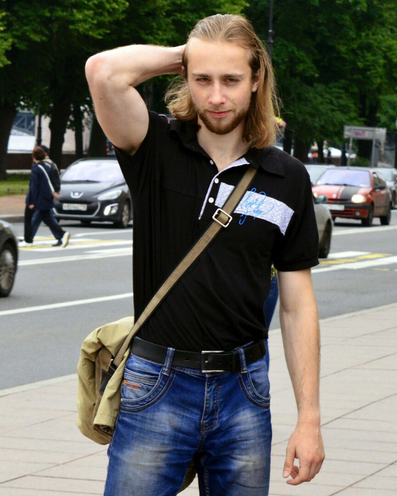

Страница о магистрской работе Лукашевича В.А.
Автобиография

Закончил биологический факультет БГУ по специальности "Биология. Биотехнология" в 2017 году на кафедре Клеточной Биологии и Биоинженерии Растений. За время обучения являлся участником междунарожных научных школ по проблемам физиологии растений, генетике и биотехнологии, участником внутриуниверситетстких и международных конференций. Тема дипломной работы: Действие наночастиц меди на электрические характеристики мембраны клеток Nitella flexilis. Круг научных интересов: минеральное питание растений, молекулярная биология и селекция устройчивых культур, стерильная культура коммерчески ценных видов растений, электрофизиология растений, биоцидное действие наночастиц металлов и разработка методик их синтеза. Тема дипломной работы: Разработка и усовершенствование методов "зеленого" наносинтеза и тестирование биологической активности полученных таким образом препаратов наночастиц.
- Дипломная работа
- Выпускная работа
- Научный руководитель Демидчик В.В.